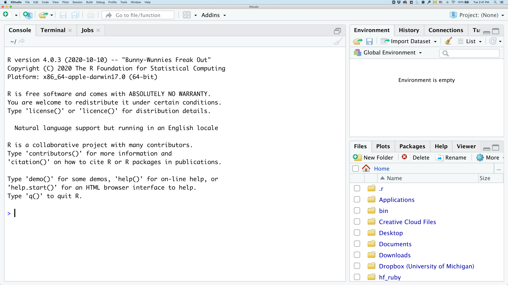
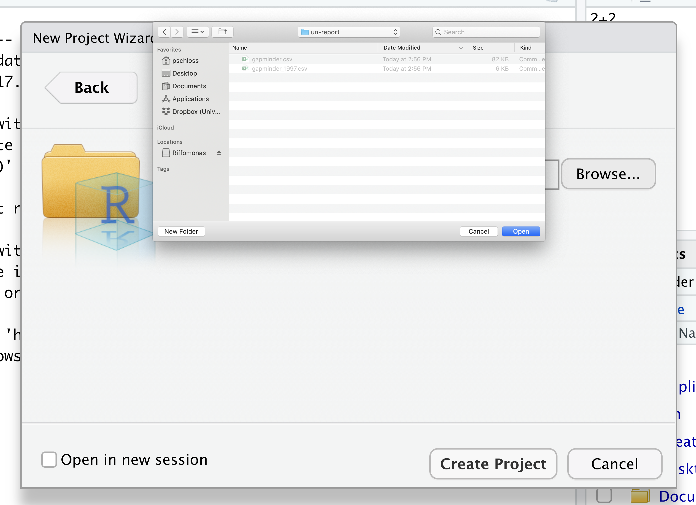
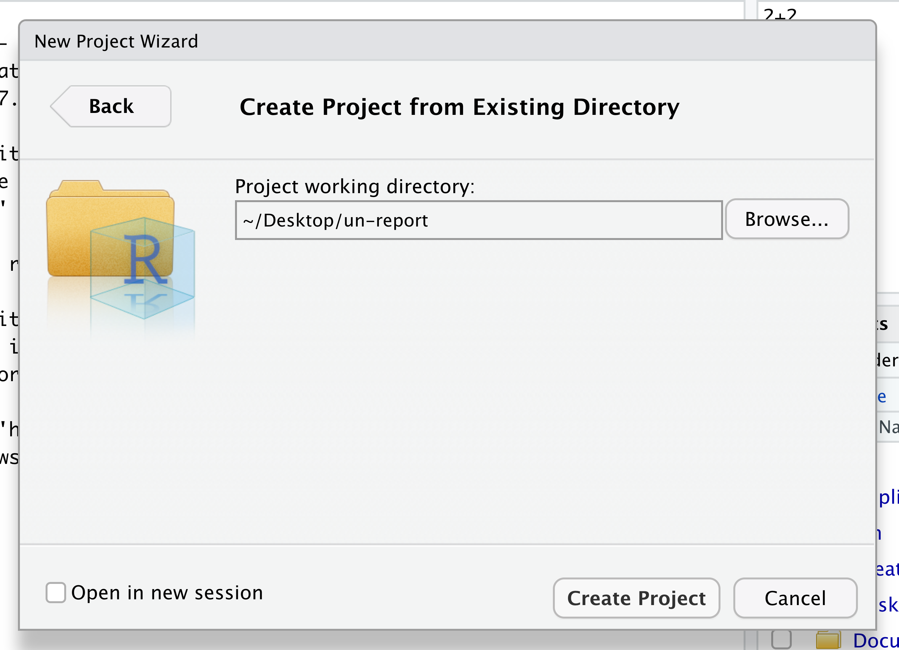

Getting Started with R
Overview
Teaching: 90 min
Exercises: 15 minQuestions
What are R and R Studio?
How do I perform tasks and store information?
Objectives
To become oriented with R and R Studio.
To learn about functions and objects.
Contents
Bonus: why learn to program?
Share why you’re interested in learning how to code.
Solution:
There are lots of different reasons, including to perform data analysis and generate figures. I’m sure you have morespecific reasons for why you’d like to learn!
Introduction to R and RStudio
To perform exploratory analyses, we need the data we want to explore and a platform to analyze the data.
You already downloaded the data. But what platform will we use to analyze the data? We have many options!
We could try to use a spreadsheet program like Microsoft Excel or Google sheets that have limited access, less flexibility, and don’t easily allow for things that are critical to “reproducible” research, like easily sharing the steps used to explore and make changes to the original data.
We could also use a program like SAS or STATA, which are used by many epidemiologists. However, these programs are not freely available, the graphics are not as customizable, and there are not a ton of specialized packages for different niche analyses.
Instead, we’ll use a more general programming language to test our hypothesis. Today we will use R, but we could have also used Python for the same reasons we chose R. Both R and Python are freely available, the instructions you use to do the analysis are easily shared, and by using reproducible practices, it’s straightforward to add more data or to change settings like colors or the size of a plotting symbol.
But why R and not Python?
There’s no great reason. Although there are subtle differences between the languages, it’s ultimately a matter of personal preference. Both are powerful and popular languages that have very well developed and welcoming communities of scientists that use them. As you learn more about R, you may find things that are annoying in R that aren’t so annoying in Python; the same could be said of learning Python. If the community you work in uses R, then you’re in the right place.
To run R, all you really need is the R program, which is available for computers running the Windows, Mac OS X, or Linux operating systems. You downloaded R while getting set up for this workshop.
To make your life in R easier, there is a great (and free!) program called RStudio that you also downloaded and used during set up. As we work today, we’ll use features that are available in RStudio for writing and running code, managing projects, installing packages, getting help, and much more. It is important to remember that R and RStudio are different, but complementary programs. You need R to use RStudio.
To get started, we’ll spend a little time getting familiar with the RStudio environment and setting it up to suit your tastes. When you start RStudio, you’ll have three panels.

On the left you’ll have a panel with three tabs - Console, Terminal, and Jobs. The Console tab is what running R from the command line looks like. This is where you can enter R code. Try typing in 2+2 at the prompt (>). In the upper right panel are tabs indicating the Environment, History, and a few other things. If you click on the History tab, you’ll see the command you ran at the R prompt.

In the lower right panel are tabs for Files, Plots, Packages, Help, and Viewer.
We’ll spend more time in each of these tabs as we go through the workshop, so we won’t spend a lot of time discussing them now.
Let’s get going on our analysis!
One of the helpful features in RStudio is the ability to create a project. A project is a special directory that contains all of the code and data that you will need to run an analysis.
At the top of your screen you’ll see the “File” menu. Select that menu and then the menu for “New Project…”.

When the smaller window opens, select “Existing Directory” and then the “Browse” button in the next window.


Navigate to the directory that contains your code and data from the setup instructions and click the “Open” button.

Then click the “Create Project” button.

Did you notice anything change?
In the lower right corner of your RStudio session, you should notice that your Files tab is now your project directory. You’ll also see a file called un-report.Rproj in that directory.
From now on, you should start RStudio by double clicking on that file. This will make sure you are in the correct directory when you run your analysis.

We’d like to create a file where we can keep track of our R code.
Back in the “File” menu, you’ll see the first option is “New File”. Selecting “New File” opens another menu to the right and the first option is “R Script”. Select “R Script”.
Now we have a fourth panel in the upper left corner of RStudio that includes an Editor tab with an untitled R Script. Let’s save this file as intro_to_r.R in our project directory.
We will be entering R code into the Editor tab to run in our Console panel.
On line 1 of intro_to_r.R, type 2+2.
With your cursor on the line with the 2+2, press Ctrl+Enter on your keyboard.
You should be able to see that 2+2 was run in the Console.
(You can also click Run in the top right side of the Editor, but this isn’t quite as easy.)
As you write more code, you can highlight multiple lines and then press Ctrl+Enter, orclick Run, to run all of the lines you have selected.
Comments
Sometimes you may want to write comments in your code to help you remember what your code is doing, but you don’t want R to think these comments are a part of the code you want to evaluate. That’s where comments come in! Anything after a
#symbol in your code will be ignored by R. For example, let’s say we wanted to make a note of what each of the functions we just used do:# this is a comment
Foundational topics
Functions
Functions are built-in procedures that automate a task for you. You input arguments into a function and the function returns a value. We’ll go over a few math functions to get our feet wet.
You call a function in R by typing it’s name followed by opening then closing parenthesis. Each function has a purpose, which is often hinted at by the name of the function.
Let’s start with the sqrt() function.
Let’s try to run the function without anything inside the parenthesis.
sqrt()
Error in sqrt(): 0 arguments passed to 'sqrt' which requires 1
We get an error message. Don’t panic! Error messages pop up all the time, and can be super helpful in debugging code.
In this case, the message tells us zero arguments were passed to the function, but we need to input at least one.
Many functions, including sqrt, require additional pieces of information to do their job.
We call these additional values “arguments” or “parameters.”
You pass arguments to a function by placing values in between the parenthesis.
A function takes in these arguments and works behind the scenes to output something we’re interested in.
For example, we want to provide a number to sqrt(), namely the number we want the square root of:
sqrt(4)
[1] 2
Here, the input argument is 4, and the output is 2, just like we’d expect.
Now let’s do an example where we might not know the expected output:
sqrt(2)
[1] 1.414214
Great, now let’s move onto a slightly more complicated function.
If we want to round a number, we can use the round() function:
round(3.14159)
[1] 3
Why did this round to three? What if we want it to round to a different number of digits?
Pro-tip
Each function has a help page that documents what arguments the function expects and what value it will return. You can bring up the help page a few different ways. If you have typed the function name in the Editor windows, you can put your cursor on the function name and press F1 to open help page in the Help viewer in the lower right corner of RStudio. You can also type
?followed by the function name in the console.For example, try running
?roundin the console. A help page should pop up with information about what the function is used for and how to use it, as well as useful examples of the function in action. As you can see,round()has two arguments: the numeric input and the number of digits to round to.
We can use the digits argument in round() to change how many decimal places are kept:
round(3.14159, digits = 2)
[1] 3.14
Sometimes it is helpful - or even necessary - to include the argument name, but often we can skip the argument name, if the argument values are passed in the order they are defined:
round(3.14159, 2)
[1] 3.14
Position of the arguments in functions
Which of the following lines of code will give you an output of 3.14? For the one(s) that don’t give you 3.14, what do they give you?
round(x = 3.1415)round(x = 3.1415, digits = 2)round(digits = 2, x = 3.1415)round(2, 3.1415)round(3.14159265, 2)Solution
- The 1st line will give you 3 because the default number of digits is 0.
- The 2nd and 3rd lines will give you the right answer because the arguments are named, and when you use names the order doesn’t matter.
- The 4th line will give you 2 because, since you didn’t name the arguments, x=2 and digits=3.1415.
- The 5th line will also give you the right answer because the arguments are in the correct order.
Bonus Exercise: taking logarithms
Calculate the following:
- Natural log (ln) of 10
- Log base 10 of 10 (challenge: try to do this 2 different ways), and
- Log base 3 of 10
Solution
# natural log (ln) of 10 log(10) # log base 10 of 10 log10(10) log(10, base = 10) # log base 3 of 10 > log(10, base = 3)
If all this function stuff sounds confusing, don’t worry! We’ll see a bunch of examples as we go that will make things clearer.
Objects
Sometimes we want to store information for later use or manipulation. To do this in R, we store the information, or object , in a variable name that you can think of like a storage box.
Let’s say we want to round the square root of a number. One way we can do this is to put a function inside a function:
round(sqrt(2), 2)
[1] 1.41
Another way is to store the square root output first, and then round that.
To store an object for later, we have to decide on a name of the box we want to store it in first. Let’s say we want to call it square_root.
Then we have to tell R what we want to put in the object name. We use the <- symbol, which is the assignment operator to assign values generated or typed on the right to object names on the left. An alternative symbol that you might see used as an assignment operator is the = but it is clearer to only use <- for assignment. We use this symbol so often that RStudio has a keyboard short cut for it: Alt+- on Windows, and Option+- on Mac.
Let’s assign sqrt(2) to the object square_root. We can see that square_root contains the square root of 2:
square_root <- sqrt(2)
square_root
[1] 1.414214
In R terms, square_root is a named object that references or stores something. In this case, square_root stores the square root of 2.
Notice that we also have a new value in our environment in the upper right hand corner of RStudio. This panel lists all of the objects that we have stored in our environment, it’s kind of like a view into our storage room (environment) of all the boxes (objects) of things we have access to.
Now let’s round the square root of 2 to 2 decimal places:
sqrt_rounded <- round(square_root, 2)
sqrt_rounded
[1] 1.41
This is a fairly straightforward example, but you’ll see the usefulness of storing things in variables as the workshop progresses.
Now, what happens to sqrt_rounded if we update square_root?
square_root <- sqrt(4)
square_root
[1] 2
sqrt_rounded
[1] 1.41
It doesn’t update! That’s because we haven’t re-run the code that rounded square_root.
The values don’t update automatically like in a spreadsheet.
Predicting object contents
What is
my_numberafter these three lines are run?my_number <- 10 my_number + 5 my_number <- my_number + 7
- 10
- 15
- 17
- 22
Solution
The answer is 17 because 10 is stored in
my_numberin the first line, 15 is printed after the second line but is not stored somy_numberremains 10, and then 7 is added tomy_numberin the third line, making 17. If we ran the third line again,my_numberwould be 24. Because the object value changes depending on the number of times we run the final line, in most cases it’s best practice to not overwrite objects like this.
Guidelines on naming objects
- You want your object names to be explicit and not too long.
- They cannot start with a number (2x is not valid, but x2 is).
- R is case sensitive, so for example, weight is different from Weight.
- You cannot use spaces in the name.
- There are some names that cannot be used because they are the names of fundamental functions in R (e.g., if, else, for; see here for a complete list). If in doubt, check the help to see if the name is already in use (
?function_name).- It’s best to avoid dots (.) within names. Many function names in R itself have them and dots also have a special meaning (methods) in R and other programming languages.
- It is recommended to use nouns for object names and verbs for function names.
- Be consistent in the styling of your code, such as where you put spaces, how you name objects, etc. Using a consistent coding style makes your code clearer to read for your future self and your collaborators. One popular style guide can be found through the tidyverse.
Bonus Exercise: Bad names for objects
Try to assign values to some new variable names. What do you notice? After running all four lines of code below, what value do you think the variable
Flowerholds?1number <- 3 Flower <- "marigold" flower <- "rose" favorite number <- 12Solution
Notice that we get an error when we try to assign values to
1numberandfavorite number. This is because we cannot start an object name with a numeral and we cannot have spaces in object names. The objectFlowerstill holds “marigold.” This is because R is case-sensitive, so runningflower <- "rose"does NOT change theFlowerobject. This can get confusing, and is why we generally avoid having objects with the same name and different capitalization.
Getting unstuck
Sometimes you may accidentally run a line of code that isn’t quite complete yet. For instance:
my_number <-What happens when you run this? In your console at the bottom of your screen, you may see a
+instead of a>at the beginning of the line. This means that R is waiting for more information. In this case, it’s because it doesn’t know what you want to store inmy_number. You can do one of two things if this happens - finish the command you want to type (e.g. by entering a number), or hit the escape key to get unstuck.
Quotes vs. No Quotes
Let’s say we wanted to print out a word:
treeError in eval(expr, envir, enclos): object 'tree' not foundYou’ll notice that we get an error, that the object ‘tree’ is not found. This is because R is looking for an object called
tree. But what we really want is to just print out the word “tree”. To do this, we put the word in quotes (single or double) so R knows that it’s not an object it needs to look for:"tree"[1] "tree"
Glossary of terms
- Comments: lines or parts of lines that are not run. In R, comments start with a
#. - Function: takes input and generates output.
- Object: way to store information for later use and manipulation.
Key Points
R is a free programming language used by many for reproducible data analysis.
Functions allow you to perform complex tasks.
Objects allow you to store information.